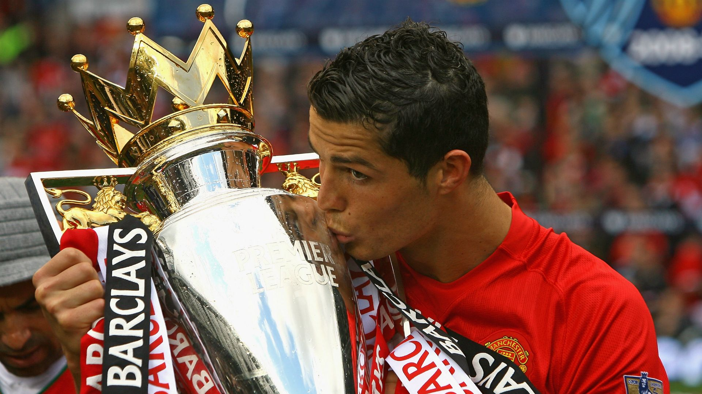
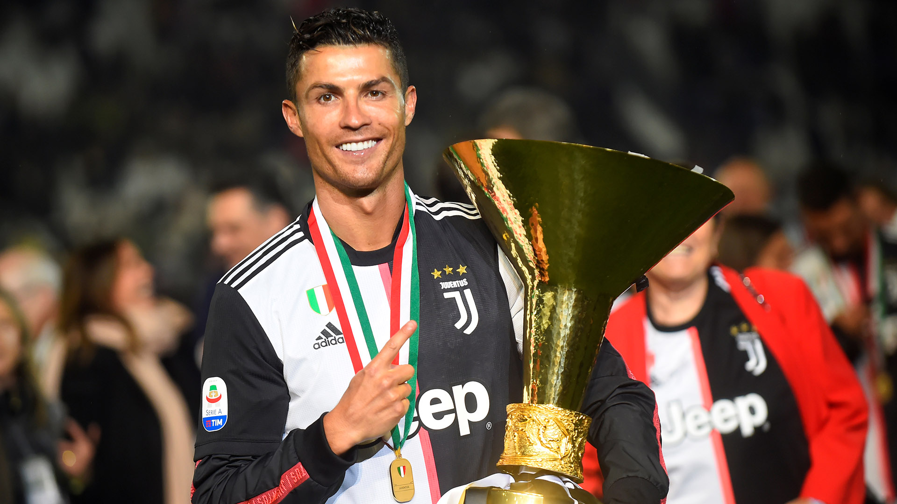
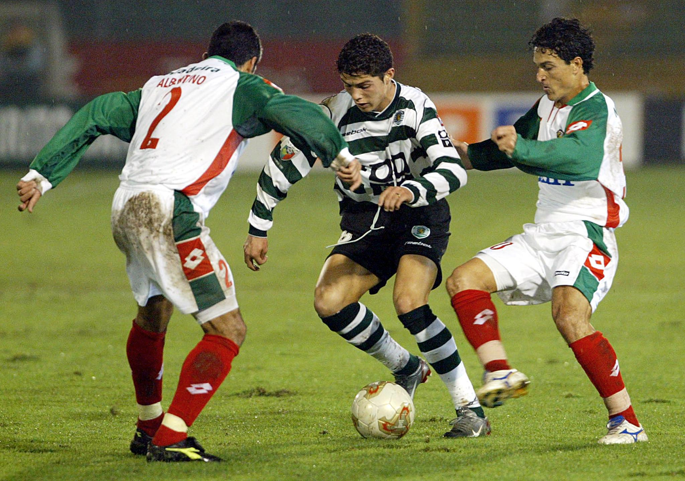

Real Madrid
1. Etapa más gloriosa: Cristiano llegó al Real Madrid en 2009...
2. Récords históricos: 450 goles en 438 partidos, máximo goleador histórico.
3. Títulos: 4 Champions League, 2 Ligas, 3 Supercopas, etc.
4. Rivalidad con Messi: Clásicos memorables que marcaron una era.

Manchester United
1. El trampolín: Llegó en 2003 con 18 años. Sir Alex Ferguson fue clave.
2. Títulos: 3 Premier, 1 Champions, FA Cup, y más. Balón de Oro 2008.
3. Transformación: Físico, mentalidad y juego colectivo.
4. Regreso en 2021: Una muestra de amor a los Red Devils.

Juventus
1. Dominio en Italia: Llegó en 2018, ganó 2 Serie A.
2. Goleador absoluto: Máximo anotador del equipo durante sus 3 temporadas.
3. Profesionalismo: Ejemplo de ética, disciplina y liderazgo.
4. Impacto global: Aumentó el valor de marca del club a nivel mundial.

Sporting de Lisboa
1. Donde empezó todo: Debutó en 2002 con solo 17 años.
2. El partido clave: Deslumbró al United en un amistoso. Lo ficharon al instante.
3. Formación completa: Técnica, carácter, ambición desde pequeño.
4. Orgullo de cantera: Hoy es leyenda e inspiración en el club.
